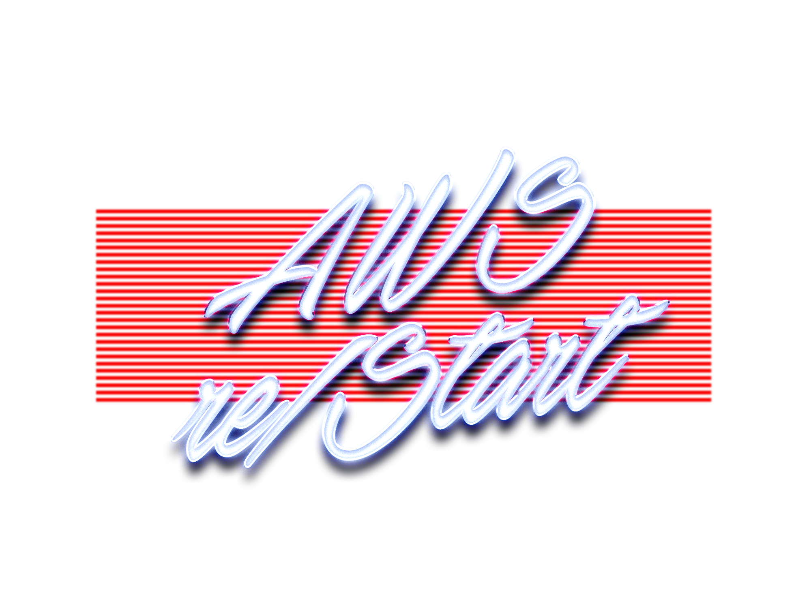
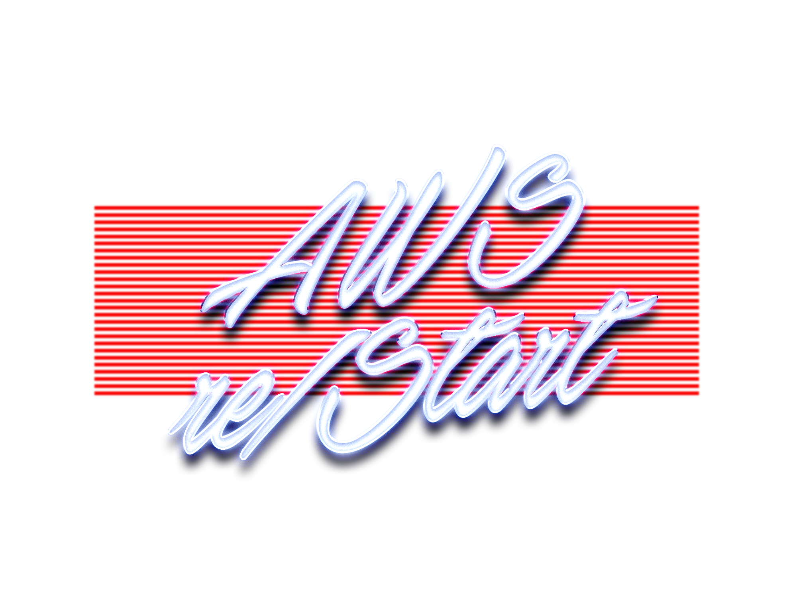
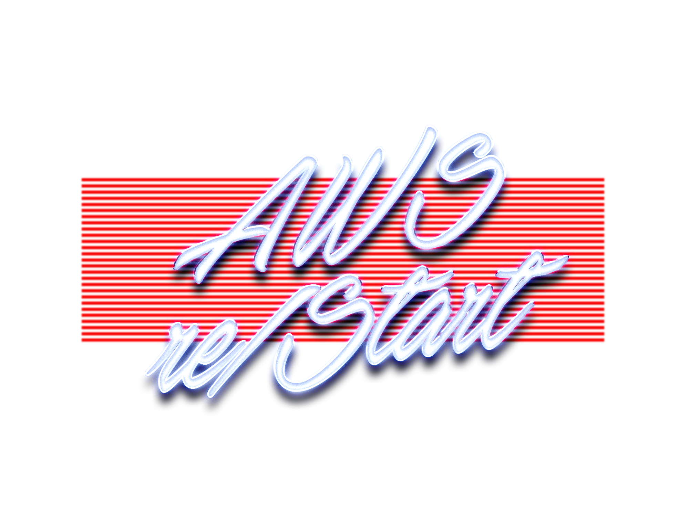
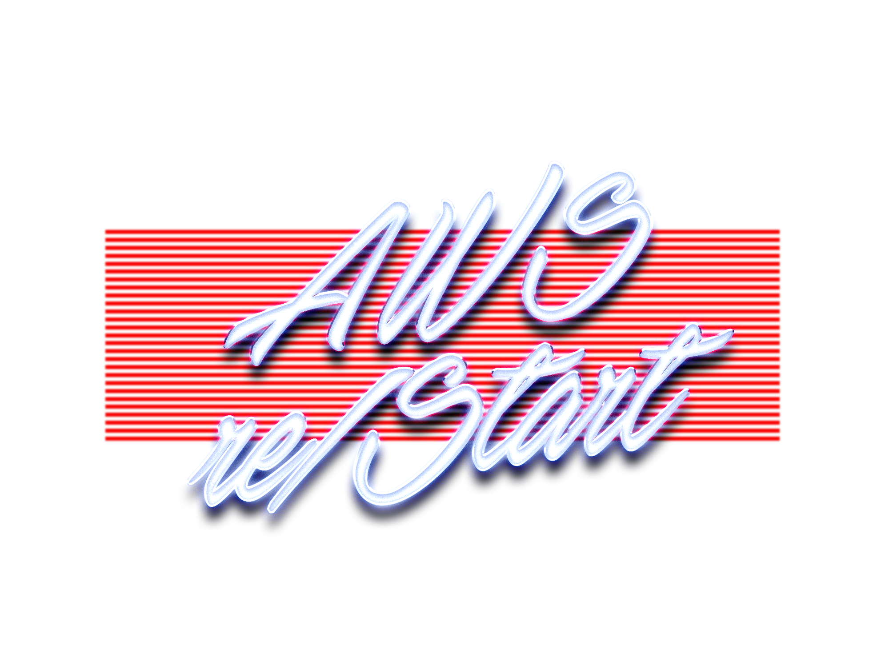

 

Démarrez une carrière
dans l’informatique
avec AWS re/start et
construisez votre avenir !
Inscrivez-vous maintenant et demandez des informations !
Pas d’experience en informatique ?
Une formation qui dure 3 mois en présentiel
Aucun prérequis de compétence n’est nécessaire..